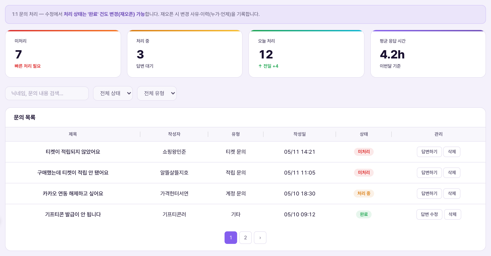
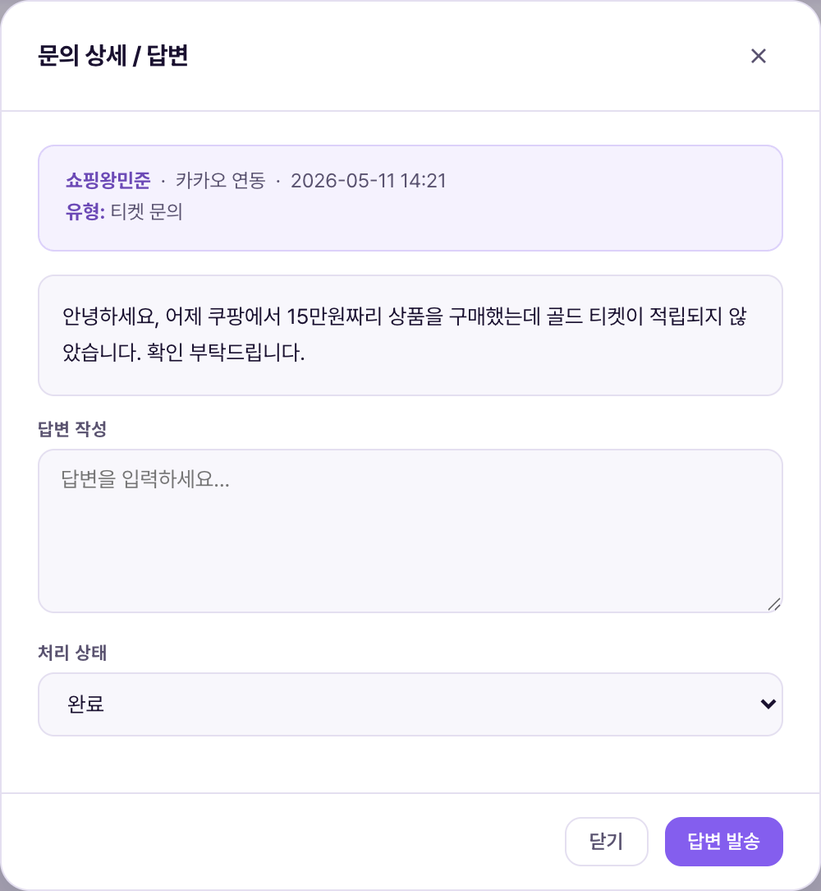

1:1 문의는 회원이 앱에서 보낸 질문을 표(테이블) 형태 목록으로 확인하고, 팝업에서 바로 답변을 써서 발송하는 고객 응대 화면입니다. 회원별 채팅창이 아니라 문의 1건 = 표의 1행이며, 답변도 그 행에 딸린 팝업에서 처리합니다.1:1 Hỏi đáp là màn chăm sóc khách hàng xem câu hỏi hội viên gửi từ app dưới dạng danh sách bảng, và soạn·gửi câu trả lời ngay trong popup. Không phải khung chat riêng theo từng hội viên mà mỗi câu hỏi = 1 dòng trong bảng, trả lời cũng xử lý trong popup gắn với dòng đó.


| 요소Thành phần | 의미Ý nghĩa | 바꾸면 생기는 일Điều gì xảy ra khi thay đổi |
|---|---|---|
| 상단 통계 4종4 thẻ thống kê phía trên | 미처리 · 처리 중 · 완료 · 평균 응답 시간Chưa xử lý · Đang xử lý · Hoàn tất · Thời gian phản hồi trung bình | 평균 응답 시간은 답변 완료(answered) 건 기준으로 자동 집계됨Thời gian phản hồi trung bình tự tính dựa trên các câu đã trả lời xong (answered) |
| 검색 · 상태 필터 · 유형 필터Tìm kiếm · lọc trạng thái · lọc loại | 닉네임·제목 검색 + 미처리/처리중/완료 + 적립·계정·기프티콘·기타 유형Tìm biệt danh·tiêu đề + Chưa xử lý/Đang xử lý/Hoàn tất + loại tích lũy·tài khoản·Gifticon·khác | 목록이 조건에 맞게 즉시 다시 로드됨Danh sách tải lại ngay theo điều kiện |
| 문의 내용Nội dung câu hỏi | 회원이 앱에서 작성한 원문 — 팝업 상단에 그대로 표시Nguyên văn hội viên viết trong app — hiện nguyên trong popup phía trên | 운영자가 이 텍스트를 수정할 수는 없음(읽기 전용)Vận hành viên không sửa được text này (chỉ đọc) |
| 기존 답변Câu trả lời trước đó | 이미 답변한 적 있으면 그 내용을 위쪽에 별도로 보여줌Nếu đã từng trả lời thì hiện riêng nội dung đó ở phía trên | 처음 답변하는 문의라면 이 영역 자체가 숨겨짐Nếu là câu hỏi trả lời lần đầu thì khu vực này tự ẩn đi |
| 답변 작성Soạn câu trả lời | 새로 보낼 답변 문구 입력란(기존 답변이 있으면 기본값으로 채워짐)Ô nhập câu trả lời mới sẽ gửi (nếu có câu trả lời cũ thì tự điền sẵn) | 비운 채 "답변 발송"을 누르면 "답변 내용을 입력하세요" 경고만 뜨고 저장 안 됨Để trống mà bấm "Gửi câu trả lời" chỉ hiện cảnh báo "Nhập nội dung trả lời" và không lưu |
| 처리 상태Trạng thái xử lý | 미처리 / 처리 중 / 완료 중 선택Chọn: Chưa xử lý / Đang xử lý / Hoàn tất | 답변 발송과 동시에 이 값으로 상태가 바뀜 — 상태만 바꾸고 답변 없이 저장하는 것은 불가(답변 필수)Đổi trạng thái ngay khi gửi câu trả lời — không thể chỉ đổi trạng thái mà không có câu trả lời (bắt buộc phải có câu trả lời) |
"답변 발송" 버튼 하나가 답변 내용 저장과 처리 상태 변경을 동시에 처리합니다(확인됨: inqSubmitAnswer 함수 — answer, status, answered_at, answered_by를 한 번에 update). 별도의 "상태만 바꾸기" 기능은 없습니다.Nút "Gửi câu trả lời" xử lý đồng thời việc lưu nội dung trả lời và đổi trạng thái (đã xác nhận: hàm inqSubmitAnswer — update cùng lúc answer, status, answered_at, answered_by). Không có chức năng riêng "chỉ đổi trạng thái".
| 상황Tình huống | 운영자가 하는 일Việc vận hành viên làm | 결과Kết quả |
|---|---|---|
| 신규 미처리 문의 응대Xử lý câu hỏi mới chưa trả lời | "미처리" 필터로 좁혀보기 → "답변하기" → 답변 작성 → 상태 "완료"로 → 답변 발송Lọc "Chưa xử lý" → "Trả lời" → soạn trả lời → đổi trạng thái "Hoàn tất" → Gửi câu trả lời | 회원 문서에 답변이 기록되고 상단 통계의 미처리 수가 1 줄고 완료 수가 1 늘어남Câu trả lời được ghi vào document hội viên, số Chưa xử lý ở thống kê giảm 1, số Hoàn tất tăng 1 |
| 완료된 문의에 추가 답변 필요Cần trả lời thêm cho câu hỏi đã hoàn tất | 완료 건도 "답변 수정"으로 다시 열어 내용 보강 후 재발송Câu hỏi đã hoàn tất cũng có thể mở lại bằng "Sửa câu trả lời" để bổ sung rồi gửi lại | 기존 답변 위에 새 답변으로 덮어써짐(같은 문서, 새 문서 생성 아님)Câu trả lời mới ghi đè lên câu cũ (cùng document, không tạo document mới) |
| 스팸·중복 문의 정리Dọn câu hỏi spam·trùng lặp | "삭제" 클릭 → 확인 팝업(문의 제목이 그대로 표시됨)에서 재확인Bấm "Xóa" → xác nhận lại ở popup (hiện đúng tiêu đề câu hỏi đó) | Firestore 문서가 완전히 삭제되어 복구 불가Document trên Firestore bị xóa hẳn, không khôi phục được |
answered_at(시각)·answered_by(답변자)가 최신값으로 덮어써질 뿐, "변경 사유"를 따로 입력받는 필드나 과거 답변들의 이력 목록은 없습니다(확인됨). 전체 관리자 활동 로그(logAdmin)에 "1:1 문의 답변 발송" 기록은 남지만, 문의 건별 상세 이력 조회 화면은 아직 없습니다.Thông báo trên đầu màn hình ghi "Khi mở lại sẽ ghi lý do thay đổi·lịch sử (ai·khi nào)", nhưng theo mã nguồn thật, mỗi lần trả lời chỉ ghi đè answered_at (thời gian)·answered_by (người trả lời) bằng giá trị mới nhất, không có field riêng để nhập "lý do thay đổi" hay danh sách lịch sử các câu trả lời trước đó (đã xác nhận). Log hoạt động admin tổng thể (logAdmin) có ghi "Gửi câu trả lời 1:1 Hỏi đáp" nhưng chưa có màn xem chi tiết lịch sử theo từng câu hỏi.